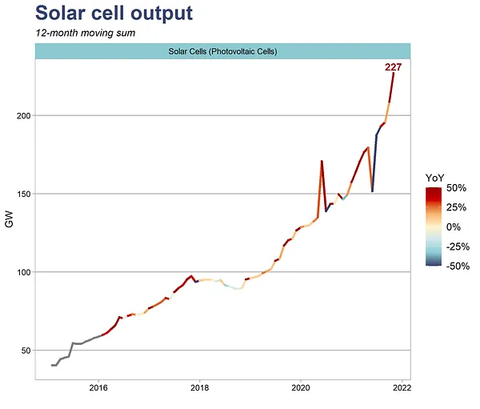

Mobilità e Città

In 1000 parole
1. Energie Rinnovabili: Solare ed Eolica
2. Innovazione Tecnologica: Robotica e Fusione Nucleare
3. Investimenti e Infrastrutture per il Net-Zero
4. Impatto Ambientale: Elettronica e Trasporti
5. Criptovalute e Sostenibilità Ambientale
1. Energie Rinnovabili: Solare ed Eolica
1.1 Energia Solare: Una Forza Trainante
Le energie rinnovabili sono diventate il fulcro della transizione energetica globale, con l'energia solare ed eolica che guidano il cambiamento 🌬️ ff.11.1 La rivincita delle rinnovabili?. L'energia solare rappresenta una pietra miliare nelle strategie di sostenibilità grazie alla sua scalabilità e alla diminuzione dei costi di produzione 🎼 ff.12 Sole, cuore e amore. La Cina, in particolare, ha svolto un ruolo pionieristico nell'espansione dell'energia solare 🇨🇳 ff.11.2 La Cina fa storia a sé?, installando 227 GW di potenza solare nel 2021, un incremento del 61% rispetto all'anno precedente. Questo significativo aumento non solo rafforza la posizione della Cina come leader globale nelle energie rinnovabili, ma dimostra anche l'efficacia delle politiche governative mirate alla sostenibilità.
Figura 1: Produzione di energia solare (MW per milione di abitanti) 🎼 ff.12 Sole, cuore e amore
1.2 Energia Eolica: Onshore e Offshore
L'energia eolica, sia onshore che offshore, ha contribuito significativamente all'aumento complessivo delle energie rinnovabili 🌬️ ff.11.1 La rivincita delle rinnovabili?. Nel 2020, l'eolico ha aggiunto 163 TWh, compensando completamente la diminuzione della produzione di carbone. Questo aumento è stato accompagnato da investimenti significativi nelle infrastrutture e dall'adozione di tecnologie avanzate che hanno migliorato l'efficienza e la capacità di generazione delle turbine eoliche. L'eolico non solo riduce le emissioni di CO2, ma stimola anche l'innovazione tecnologica nel settore energetico, favorendo lo sviluppo di soluzioni più sostenibili e resilienti.

Figura 2: Costi delle infrastrutture energetiche 🌉 ff.16.2 Il costo delle infrastrutture
1.3 Distribuzione Globale e Impatti Socio-Economici
La distribuzione globale delle installazioni solari è stata ben documentata 🎼 ff.12 Sole, cuore e amore, con Stati Uniti, Giappone e Germania che contribuiscono significativamente. La crescente domanda di energia pulita ha spinto questi paesi a investire massicciamente in tecnologie solari ed eoliche, creando un effetto domino che stimola ulteriori innovazioni e riduce i costi unitari di produzione. Le politiche governative mirate alla riduzione delle emissioni e all'espansione delle energie rinnovabili hanno creato un ambiente favorevole per gli investimenti privati e pubblici, accelerando la transizione energetica. Questa dinamica non solo promuove la sostenibilità ambientale, ma crea anche nuovi posti di lavoro e stimola lo sviluppo economico locale.

Figura 3: Potenza solare installata nei principali paesi (in MW) 🎼 ff.12 Sole, cuore e amore
2. Innovazione Tecnologica: Robotica e Fusione Nucleare
2.1 Robotica nell'Ottimizzazione Energetica
I sistemi robotici avanzati riducono i costi operativi e aumentano l'efficienza delle operazioni
rinnovabili.
La robotica gioca un ruolo cruciale nell'ottimizzazione e nella manutenzione delle infrastrutture rinnovabili 🦾 ff.11.3 I robot ci assistono. I sistemi robotici avanzati stanno rivoluzionando l'installazione e la manutenzione delle turbine eoliche e dei pannelli solari, riducendo i costi operativi e aumentando l'efficienza. Questa automazione non solo riduce i tempi di inattività ma migliora anche la precisione delle operazioni, permettendo una maggiore scalabilità dei progetti rinnovabili. L'adozione di robot ha permesso di superare le limitazioni umane, garantendo un monitoraggio continuo e una manutenzione predittiva che aumenta la durata e la performance delle infrastrutture energetiche.

Figura 4: Robotica nell'energia rinnovabile 🦾 ff.11.3 I robot ci assistono
2.2 Fusione Nucleare: La Frontiera dell'Energia Pulita
Commonwealth Fusion Systems ha raccolto 1,8 miliardi di dollari per dimostrare una reazione di
fusione utile entro il 2025.
La fusione nucleare rappresenta una delle frontiere più promettenti per un'energia pulita e sostenibile 🌞 ff.10.4 Soldi fusi. Commonwealth Fusion Systems (CFS), una startup affiliata al MIT, ha raccolto 1,8 miliardi di dollari per dimostrare una reazione di fusione utile entro il 2025 🌞 ff.10.4 Soldi fusi. Questo investimento significativo riflette la crescente fiducia nel potenziale della fusione nucleare di fornire una fonte energetica praticamente illimitata e pulita, superando le sfide tecnologiche attuali. I progressi nella fusione sono fondamentali per ridurre la dipendenza dalle fonti fossili e affrontare le sfide della sostenibilità energetica a lungo termine.

Figura 5: Progressi nei sistemi di fusione nucleare 🌞 ff.10.4 Soldi fusi
2.3 Implicazioni delle Risorse per la Fusione Energetica
Il successo della fusione energetica dipende non solo dai progressi tecnologici ma anche dalla disponibilità e gestione delle risorse critiche 🔚 ff.11.5 Finire le risorse. I reattori a fusione richiedono materiali come l'elio e i superconduttori avanzati, che necessitano di metodi sostenibili per l'estrazione e la lavorazione. La gestione sostenibile delle risorse sarà essenziale per supportare l'adozione diffusa dell'energia da fusione e garantire la sostenibilità a lungo termine di questa tecnologia. Inoltre, l'innovazione nella gestione delle risorse può portare a nuove scoperte e miglioramenti nelle tecnologie di fusione, rendendo questa fonte di energia ancora più efficiente ed economica.

Figura 6: Risorse per la fusione nucleare 🔚 ff.11.5 Finire le risorse
3. Investimenti e Infrastrutture per il Net-Zero
3.1 Requisiti Finanziari per la Transizione
Sono necessari 9 trilioni di dollari all'anno per raggiungere gli obiettivi ecologici di COP26.
Raggiungere il net-zero richiede investimenti massicci e lo sviluppo di nuove infrastrutture 💰 ff.16.1 Tanti trillioni di dollari. McKinsey stima che siano necessari 9 trilioni di dollari all'anno per raggiungere gli obiettivi ecologici di COP26, rappresentando circa un decimo del PIL globale 🎼 ff.16.1. Questi investimenti sono cruciali per scalare le fonti di energia rinnovabile, migliorare l'efficienza energetica e sviluppare tecnologie di cattura del carbonio 🌉 ff.16.2 Il costo delle infrastrutture. L'impegno finanziario deve essere accompagnato da strategie di investimento mirate che favoriscano lo sviluppo sostenibile e la resilienza delle infrastrutture energetiche.
3.2 Costi e Sviluppo delle Infrastrutture
Saranno necessari 50 trilioni di dollari entro il 2050 per sviluppare e mantenere infrastrutture
energetiche sostenibili.
La costruzione delle infrastrutture necessarie per un futuro sostenibile include nuovi impianti energetici, modernizzazione delle reti e sistemi di trasporto efficienti 🌉 ff.16.2 Il costo delle infrastrutture. Goldman Sachs riporta che saranno necessari 50 trilioni di dollari entro il 2050 per sviluppare e mantenere queste infrastrutture, con 30 trilioni destinati alle energie rinnovabili 🎼 ff.16.2. Le reti intelligenti e le soluzioni di stoccaggio energetico avanzate sono particolarmente cruciali per gestire l'intermittenza delle fonti rinnovabili e mantenere la stabilità del sistema energetico globale. Questo investimento non solo supporta la transizione energetica ma crea anche nuove opportunità economiche e occupazionali nel settore tecnologico e ingegneristico.

Figura 7: Decarbonizzazione e incremento dei costi unitari 🌉 ff.16.2 Il costo delle infrastrutture
I mercati del carbonio attuali affrontano significative inefficienze ⚫ ff.16.3 Il mercato (nero) della CO2, con prezzi del carbonio che variano ampiamente tra le regioni 🎼 ff.16.3. Queste discrepanze ostacolano l'efficacia dei mercati del carbonio nella riduzione delle emissioni, rendendo necessaria l'adozione di meccanismi di pricing standardizzati per creare mercati più equi ed efficaci 🌉 ff.16.3. Le inefficienze nei mercati del carbonio possono portare a una sottovalutazione degli sforzi di riduzione delle emissioni e a una mancanza di incentivi per le aziende a investire in tecnologie verdi. Per superare queste sfide, è essenziale implementare politiche che favoriscano la trasparenza e la stabilità dei prezzi del carbonio.
 della CO2")
Figura 8: Tassazione delle emissioni di CO2 in Europa, California e Corea del Sud ⚫ ff.16.3 Il mercato (nero) della CO2
4. Impatto Ambientale: Elettronica e Trasporti
4.1 Inquinamento da Dispositivi Elettronici
La produzione di un singolo smartphone consuma circa 30 MJ di energia in 2 anni.
L'impatto ambientale delle tecnologie moderne è un tema cruciale per la sostenibilità 🌟 ff.32 I numeri non mentono. La produzione e l'uso di dispositivi elettronici, come smartphone e laptop, consumano una quantità significativa di energia e generano emissioni di carbonio ⚈ ff.32.1 Quanto inquinano i cellulari?. La produzione di un singolo smartphone consuma circa 30 MJ di energia in 2 anni, rappresentando il 3-8% dell'energia necessaria per la sua produzione ⚈ ff.32.1. Questo evidenzia la necessità di pratiche di produzione più sostenibili ed efficienti processi di riciclaggio. L'adozione di tecnologie più verdi e l'incremento delle iniziative di riciclo possono contribuire a ridurre significativamente l'impronta ecologica di questi dispositivi.

Figura 9: Consumo energetico di vari dispositivi elettronici 🎼 ff.32 I numeri non mentono
4.2 Emissioni Comparate dei Veicoli
In Norvegia, il 95% dell'elettricità proviene da fonti rinnovabili, rendendo gli EV
significativamente meno inquinanti.
I veicoli elettrici (EV) offrono una riduzione delle emissioni di carbonio solo se l'elettricità utilizzata proviene da fonti rinnovabili 🚗 ff.32.5 Le auto elettriche: ecologiche o no?. In regioni come la Norvegia, dove il 95% dell'elettricità proviene da fonti rinnovabili, gli EV offrono riduzioni significative delle emissioni di carbonio 🎼 ff.32.5. Tuttavia, in paesi come la Cina e l'India, dove l'elettricità è spesso generata da carbone, i benefici ambientali degli EV sono meno pronunciati 🚗 ff.32.5. L'adozione diffusa degli EV dipende fortemente dal mix energetico nazionale, sottolineando l'importanza di una transizione parallela verso fonti energetiche rinnovabili.

Figura 10: Emissioni di CO2 per veicoli elettrici 🚗 ff.32.5 Le auto elettriche: ecologiche o no?
4.3 Efficienza nell'Allevamento Animale
L'allevamento animale ha un impatto significativo sull'ambiente, con diverse specie che presentano livelli variabili di efficienza nella conversione del mangime in proteine 🐔 ff.32.3 Galline in fuga. Ad esempio, un pollo richiede 7 kg di mangime per produrre 1 kg di proteine, mentre una mucca ne richiede tra 20 e 30 kg 🐔 ff.32.3. Ottimizzare la distribuzione delle specie animali può migliorare significativamente l'efficienza complessiva della produzione di carne e ridurre l'impronta di carbonio complessiva 🎼 ff.32.3. Questo approccio non solo contribuisce alla sostenibilità ambientale ma può anche portare a una maggiore efficienza economica nel settore agricolo.

Figura 11: Efficienza nell'allevamento animale 🐔 ff.32.3 Galline in fuga
5. Criptovalute e Sostenibilità Ambientale
5.1 Consumo Energetico delle Criptovalute
Le criptovalute rappresentano una doppia faccia della medaglia: da un lato, offrono opportunità innovative nel campo finanziario, dall'altro, pongono sfide significative per la sostenibilità ambientale 🎼 ff.73 Futuro criptato. Bitcoin, in particolare, consuma energia comparabile a quella di interi paesi 🇫🇮 ff.1.5 Il consumo energetico di bitcoin, a causa del meccanismo di Proof of Work (PoW) che richiede una grande quantità di potenza computazionale. Tuttavia, Ethereum ha adottato il Proof of Stake (PoS), riducendo drasticamente il suo consumo energetico 🚀 ff.73.4 In modo più ecologico, passando da 78 TWh a soli 0.003 TWh 🎼 ff.73.4. Questa transizione dimostra che le tecnologie blockchain possono evolversi verso soluzioni più sostenibili, riducendo significativamente l'impatto ambientale delle criptovalute.

Figura 12: Consumo energetico di Ethereum dopo il passaggio al Proof of Stake 🚀 ff.73.4 In modo più ecologico
5.2 Convergenza tra Intelligenza Artificiale e Criptovalute
La convergenza tra intelligenza artificiale (AI) e criptovalute rappresenta una frontiera innovativa 🎼 ff.73 Futuro criptato. L'AI può migliorare l'efficienza delle reti criptografiche, ottimizzando i processi di mining e riducendo il consumo energetico 🤖 ff.73.2 La convergenza AI-Bitcoin. Tuttavia, l'aumento delle richieste computazionali potrebbe richiedere ulteriori innovazioni nell'informatica a basso consumo energetico, bilanciando i potenziali risparmi con le esigenze di elaborazione avanzata 🎼 ff.73.2. Questa sinergia tra AI e blockchain può portare a reti più intelligenti e sostenibili, ma richiede investimenti continui in ricerca e sviluppo per superare le sfide tecnologiche.
5.3 Tendenze Demografiche e Adozione delle Criptovalute
Le criptovalute stanno guadagnando popolarità in economie emergenti come l'India e la Nigeria, dove l'accesso finanziario è limitato 🌟 ff.38.3 La cripto valuta per ridurre le disuguaglianze. Chainalysis ha mostrato che l'adozione globale delle criptovalute è in forte crescita in questi paesi, guidata dall'inclusione finanziaria e dall'accessibilità tecnologica 🌟 ff.38.3. Questa tendenza suggerisce un cambiamento significativo nel modo in cui vengono condotte le transazioni finanziarie a livello globale, con implicazioni per la sostenibilità ambientale e l'inclusione economica. L'adozione delle criptovalute in queste regioni può contribuire a ridurre le disuguaglianze finanziarie, fornendo accesso a servizi bancari e finanziari a popolazioni tradizionalmente escluse dal sistema finanziario.

Figura 13: Adozione delle criptovalute in economie emergenti 🌟 ff.38.3 La cripto valuta per ridurre le disuguaglianze
Conclusione
Il percorso verso un futuro sostenibile è complesso e multifaccettato, richiedendo una combinazione di investimenti finanziari massicci, avanzamenti tecnologici e implementazioni strategiche di politiche ambientali. Le energie rinnovabili, la fusione nucleare e le criptovalute giocano ruoli chiave nel plasmare il panorama globale, offrendo soluzioni innovative ma presentando anche sfide significative. La robotica, gli investimenti in startup sostenibili e l'ottimizzazione dei mercati del carbonio sono elementi essenziali per raggiungere gli obiettivi net-zero. Comprendere l'impatto ambientale di diverse tecnologie e ottimizzare le risorse disponibili sono passi cruciali per garantire un pianeta sostenibile per le generazioni future.
Temi
🍃 COP26, The Big Greta Is Watching You e le strategie per net-zero
- COP26, energie rinnovabili
- Bill Gates e il suo librozzo
- Quanto inquinano le criptovalute?
🔌 Tesla, Van Moof, Duracell? Chi vincerà la sfida della mobilità sostenibile?
- VanMoff: la Tesla olandese per le e-bike
- Quanto inquina una Tesla rispetto alla Panda?
- Noi come quelli a cavallo: il muro di Marchetti
🚲 Da Isola dei cani di Wes Anderson a Van Moof, la nuova rivoluzione verde dell'e-bike
- Cosa c'entra Wes Anderson con i ladri di bicicletta?
- Milano o Parigi? Chi sarà la regina delle piste ciclabili?
- Da quando a San Francisco si scia?
🎼 ff.33 Le piante ci salveranno?
Inno alle piante, tra algoritmi, cattura di CO2 e problemi da risolvere
- Piante: da fotosintesi a fonte di conoscenza
- Foglie in silicone per efficienze maggiori
- Come modificare la genetica per catturare più CO2
🎼 ff.51 La religione del 21esimo secolo?
Il sottile equilibrio tra Greta, Greenpeace e speranza nel futuro
- La Natura è stata idealizzata?
- L’ecologia è la religione del 21esimo secolo?
- Investiamo troppo per i cambiamenti climatici?
🎼 ff.61 La decrescita felice è impossibile?
I costi di ogni attività per un budget da 10 tonnellate di CO2 annue
- Stare nel budget di 10 tonnellate CO2 all’anno
- Hamburger che inquinano meno degli asparagi
- Un abbonamento, stile Spotify, per vivere il mondo
In breve
Il progetto artistico di COP26 ha rivoluzionato l'identità visiva della conferenza, evidenziando l'importanza dell'arte nel sensibilizzare sul cambiamento climatico.
📉 ff.1.2 Da 51 miliardi a 0
Da 51 miliardi a 0: la necessità urgente di ridurre a zero le emissioni globali di CO2-equivalenti, attualmente a 51 miliardi di tonnellate all'anno, per combattere il cambiamento climatico.
🛴 ff.1.3 Gli scooter elettrici ci salveranno?
L'80% degli spostamenti negli USA sono inferiori ai 16 km, suggerendo un potenziale di trasformazione della mobilità urbana tramite e-bikes e scooter elettrici.
🏭 ff.1.4 Catturare CO2 sarà importante
Tecnologie di cattura CO2 potrebbero diventare economicamente accessibili a meno di 100$ per tonnellata, con l'industria del cemento e dell'acciaio come principali target.
🇫🇮 ff.1.5 Il consumo energetico di Bitcoin
Il consumo energetico di Bitcoin equivale a quello dell'intera Finlandia, ma l'utilizzo di energia rinnovabile nel mining potrebbe mitigarne l'impatto ambientale.
⚡ ff.1.6 Fusione Nucleare
La fusione nucleare, un tempo prevista per i primi anni '90, ora mira al 2035 come traguardo per dimostrare un processo di fusione pulito.
❓ ff.5.1 Non tutto verde quello che luccica
Utilitaria a benzina meno inquinante di Tesla? Una promettente start-up olandese, Lightyear One, riporta come non sia tutt’oro, o verde, quello che luccica.
🔋 ff.5.2 Duracell? No, Tesla
Non solo auto: Con 3 GWh di capacità Tesla controlla una buona porzione del potenziale di immagazzinamento di energia elettrica nel mondo. E puntano a raggiungere i 1.500 GWh entro il 2030.
🚲 ff.5.3 Pedalata assistita
Durante la pandemia, le bici elettriche hanno venduto più delle auto elettriche (500k bici vs 250k auto negli Stati Uniti).
😎 ff.5.4 La Tesla delle biciclette
Se le bici elettriche sono la prossima frontiera della mobilità, Van Moof è la Tesla delle due ruote.
🧱 ff.5.5 Il muro di Marchetti
Un’ora costante universale: il limite di tempo di viaggio che influisce sulle scelte di vita e lavoro.
⚰️ ff.5.6 La pericolosità del traffico, nel mondo
E mentre siete nel traffico, occhio alla strada. In Europa guidiamo benissimo (se non per quelli col cappello).
🚲 ff.20.1 La rivincita delle biciclette
La pandemia ha aumentato l'uso della bicicletta, con un incremento notevole nelle Filippine e progressi anche in Italia con l'aumento delle piste ciclabili.
🇮🇩 ff.20.2 L'esempio di Jakarta
A Jakarta, l'utilizzo della bicicletta è aumentato di 6 volte, evidenziando un cambiamento significativo verso la mobilità sostenibile.
La qualità dell'aria a Giacarta è migliorata dopo il COVID (grazie a mobilità sostenibile).

San Francisco presenta mappe della pericolosità delle strade strade come piste da sci: la pista nera sarebbe Viale Palmanova insomma.

🚨 ff.20.4 Simmetrie di Wes Anderson contro i furti
Van Moof, azienda olandese di e-bike, sfrutta le simmetrie di Wes Anderson per promuovere la sicurezza delle sue biciclette.

Esplorando la connessione storica e culturale tra umanità e piante, evidenziata dall'ispirazione degli algoritmi di ricerca come il decision tree.
🍁 ff.33.2 Raccoglitori di CO2
Studio su come le piante catturano e immagazzinano CO2, con focus su efficienze di storage in foreste e torbiere, mostrando l'importanza della biodiversità e delle tecnologie innovative per la semina.
🏭 ff.33.3 Piante modificate per catturare CO2
Tecniche genetiche avanzate come CRISPR vengono utilizzate per aumentare la capacità delle piante di convertire CO2 in carbonio stabilizzato, un approccio supportato da importanti investimenti nel campo della genetica vegetale.
🧮 ff.33.4 Muffe computazionali
Il Plasmodium, una muffa sfruttata per risolvere problemi di ottimizzazione combinatoria come il Traveling Salesman Problem, dimostrando la potenzialità di sistemi biologici nel calcolo e nella progettazione di reti efficienti e resilienti.

Viviamo sempre più in aree urbanizzate, con un aumento percentuale della popolazione che vive in città.
🚦 ff.34.2 Ripensare le città: mobilità e traffico
Il COVID e lo smart working hanno migliorato la situazione del traffico, ma quanto?
🚦 ff.34.3 Ripensare le città: spazi vivibili
Progetti che hanno ridato spazio a verde e canali rendendo le città più vivibili.
🥵 ff.34.4 Ripensare le città: caldo
Le ondate di calore estive mostrano l'importanza di aree verdi in città per mitigare il calore.
Immagini ESA di Milano con temperature più basse nelle zone verdi

Le città come esempio di monocultura e omogeneizzazione, dominati da auto e traffico.
💚 ff.51.1 L’affabulazione per il verde
Riflessioni su come la natura, simbolo di speranza e pace interiore, diventi oggetto di un'affabulazione romantica, che a volte rischia di distorcere la realtà pragmatica della sua esistenza e utilità.
🛐 ff.51.2 Ecologia = religione?
Analisi critica sulle possibili somiglianze tra l'approccio moderno all'ecologia e le pratiche religiose, interrogandosi sull'esistenza di una fede verde basata più su convinzioni emotive che su azioni razionali e scientifiche.
🔥 ff.51.3 Sono il tuo sogno eretico
I cambiamenti climatici sono esagerati dai media? Uno spunto per considerare un approccio più equilibrato che includa soluzioni innovative e adattive, anche valutando il ritorno sull'investimento delle politiche climatiche rispetto alla salute pubblica, l'istruzione e la riduzione della povertà.
⚖️ ff.61.1 Misurare l’inquinamento in ore di vita
Convertire le emissioni di CO2 in tempo di vita percepibile rende tangibile l'impatto ambientale delle nostre scelte quotidiane.
10 tonnellate di CO2 annue rappresentano l'obiettivo pro capite globale di emissioni per vivere in modo sostenibile.
27 kg/giorno → 1 kg/h → 20 g/min
🕗 ff.61.2 Emissioni convertite in tempo
Analizzando le emissioni attraverso l'equivalenza tempo-CO2, individuiamo attività quotidiane e il loro impatto in ore di vita perse.
🥩 ff.61.3 Carne o asparagi?
La scelta alimentare influisce significativamente sulle emissioni di CO2, con sorprendenti confronti tra diete vegetariane e consumo di carne.
🎶 ff.61.4 Un abbonamento stile Spotify per il mondo
Considerare l'inquinamento come un servizio in abbonamento può essere un passo verso la compensazione delle proprie emissioni CO2.